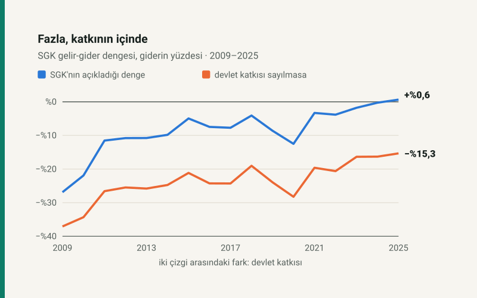

Kısa cevap
Ne kalktı? 5510 sayılı Kanunun 81 inci maddesinin üçüncü fıkrası. Bu fıkra Hazine'yi, SGK'nın her ay tahsil ettiği malullük, yaşlılık ve ölüm (MYÖ) ile genel sağlık sigortası (GSS) priminin dörtte biri kadar ödemeye bağlıyordu. Fıkra 1 Ağustos 2026'da yürürlükten kalktı, maddenin başlığı da "Prim oranları ve Devlet katkısı" yerine "Prim oranları" oldu.
Bana bir etkisi var mı? Doğrudan yok. Prim oranları, prime esas kazanç tavanı, emekli aylığının hesabı ve artışı, işverenin prim indirimi ve Bağ-Kur'un 5 puanlık indirimi aynı. Kaldırılan para sigortalıdan alınmıyordu; Hazine'den SGK'ya gidiyordu.
Değişen ne? Tutarı belirleyen kural. Katkı kanunla bağlıydı: primlerin dörtte biri, istendiği tarihten itibaren 15 gün içinde. Yerine yeni bir oran gelmedi; SGK'nın gelirle kapanmayan kısmı bundan sonra her yıl bütçede ayrılan açık finansmanıyla kapanacak.
Kanun ne diyordu, şimdi ne diyor?
| Metin | |
|---|---|
| 1 Ağustos 2026'ya kadar | "Devlet, Kurumun ay itibarıyla tahsil ettiği malullük, yaşlılık ve ölüm sigortaları ile genel sağlık sigortası priminin dörtte biri oranında Kuruma katkı yapar. Devlet katkısı olarak hesaplanacak tutar talep edilen tarihi takip eden 15 gün içinde Hazinece Kuruma ödenir." (5754 sayılı Kanunla 2008'de yazıldı) |
| Bugün | "(Mülga fıkra: 24/7/2026-7590/15 md.)" |
| Değiştiren | 7590 sayılı Bazı Kanun ve Kanun Hükmünde Kararnamelerde Değişiklik Yapılmasına Dair Kanun, m.15. Kabul 24 Temmuz 2026, Resmî Gazete 31 Temmuz 2026. Yürürlük m.31/(c): 1 Ağustos 2026. |
| Gerekçe | Teklif 3 Temmuz 2026'da TBMM'ye sunulurken bütçeden SGK'ya yapılan aynı nitelikteki ödemelerin tek kalemde toplanacağı ve bütçe kalemlerinin izlenebilirliğinin artacağı açıklandı. |
Aynı kanunun bir sonraki maddesi (m.16) en düşük emekli aylığını belirleyen 5510 ek m.19'daki tutarı 20.000 TL'den 23.552 TL'ye çıkardı; bu, Temmuz 2026 ödeme döneminden geçerli. Sitedeki emekli aylığı aracı bu tutarla hesaplıyor.
Katkı bir sigortalı için ne kadardı?
Bir 4/a sigortalısının brüt ücretinden 2026'da %14 sigortalı, %21,75 işveren payı prim olarak ödeniyor. Bunun %2,25'i işverenin ödediği kısa vadeli sigorta kolları primi; geri kalan %33,5 MYÖ ve GSS primi. Kaldırılan fıkra Hazine'ye bunun dörtte birini, yani brüt ücretin %8,375'i kadar tutarı ayrıca ödetiyordu.
| Brüt ücret | MYÖ + GSS primi | Devlet katkısı (¼) |
|---|---|---|
| 33.030 (asgari ücret) | 11.065 | 2.766 |
| 60.000 | 20.100 | 5.025 |
| 100.000 | 33.500 | 8.375 |
| 297.270 (SGK tavanı) | 99.585 | 24.896 |
Bu tutar ücretinizden kesilmiyordu ve kalkması da bordronuzu değiştirmiyor. Tablo yalnızca "dörtte bir"in büyüklüğünü gösteriyor: asgari ücretle çalışan her sigortalı için Hazine, işçi ve işverenin yatırdığı MYÖ ve GSS priminin üstüne ayda yaklaşık 2.766 TL ekliyordu. Gerçek katkı tahsil edilen prim üzerinden hesaplandığı için teşvikli, borçlu ya da eksik günlü sigortalılarda farklıdır.
2025'in fazlası nereden geliyordu?
SGK 2025'i 35,7 milyar TL fazlayla kapattı. Kurumun kendi tablosunun başladığı 2002'den bu yana fazla veren tek yıl bu. Aynı yıl gelirlere 888,7 milyar TL devlet katkısı yazıldı. Katkı gelir sayılmasa 2025'in dengesi 852,9 milyar TL açık olurdu.
| Yıl | Prim geliri | Devlet katkısı | Diğer gelir | Gider | Denge | Katkısız denge |
|---|---|---|---|---|---|---|
| 2021 | 440,1 | 106,8 | 86,2 | 654,8 | −21,6 | −128,5 |
| 2022 | 724,1 | 174,7 | 101,3 | 1.039,8 | −39,7 | −214,4 |
| 2023 | 1.497,9 | 325,6 | 369,4 | 2.232,3 | −39,4 | −365,0 |
| 2024 | 2.810,5 | 637,7 | 514,3 | 3.972,8 | −10,3 | −648,0 |
| 2025 | 4.047,3 | 888,7 | 663,1 | 5.563,3 | 35,7 | −852,9 |
Bu, iyileşmenin olmadığı anlamına gelmiyor. Primler 2009'da giderin %51,1'ini karşılıyordu, 2025'te %72,7'sini. Katkı sayılmadığında açık da giderin %37,1'inden %15,3'üne indi. Ama katkının kendisi 2011'den beri her yıl giderin %14,6 ile %16,8'i arasında; açıklanan dengeyi sıfırın üstüne taşıyan bu pay.
Bütçeden SGK'ya giden para azalıyor mu?
Kanun bunu söylemiyor; söylediği, paranın hangi satırdan gideceği. Devlet katkısı zaten bütçeden SGK'ya giden paranın yalnızca bir parçasıydı. SGK'nın tablosuna göre 2025'te bütçe transferleri toplamı 1.953,8 milyar TL, GSYH'nin %3,1'i. Bunun %45,5'i devlet katkısıydı; gerisi ek ödeme, faturalı ödemeler, prim teşvikleri ve ödeme gücü olmayanların GSS primi gibi kalemler.
2026 bütçesi bu değişiklikten önce hazırlandı ve SGK'ya 1.162,2 milyar TL devlet katkısı, yalnızca 43,7 milyar TL açık finansmanı öngörüyordu. Ocak–Temmuz'da gerçekleşen katkı 379,7 milyar TL, öngörülenin %32,7'si; Mart ve Nisan'da hiç katkı yatmadı. Temmuz'da 125,2 milyar TL yattı; fıkra 1 Ağustos'ta kalktığı için bu, kuralın geçerli olduğu son ayın verisi.
| Ay | Prim geliri | Devlet katkısı | Denge |
|---|---|---|---|
| Ocak | 327,1 | 87,9 | −90,2 |
| Şubat | 368,5 | 121,6 | −3,6 |
| Mart | 516,9 | 0,0 | 41,1 |
| Nisan | 473,1 | 0,0 | −32,5 |
| Mayıs | 398,5 | 28,9 | −10,2 |
| Haziran | 495,6 | 16,1 | 9,6 |
| Temmuz | 481,8 | 125,2 | 16,3 |
Bütçenin geri kalanında katkı için ayrılmış 782,5 milyar TL artık bu adla ödenemez. SGK'nın 2026 bütçesi aynı rakamlarla katkı satırı olmadan yazılsaydı öngörülen açık 43,7 milyar değil 1.205,9 milyar TL olurdu. Gerekçenin "tek kalemde toplama" dediği bu: aynı ödeme başka bir satırdan yapılır. Bunun bir sonucu da SGK'nın tablosunda açığın büyük görünmesi. Ocak–Temmuz'un 69,5 milyar TL'lik açığı için tabloda açık finansmanı satırı henüz sıfır.
Asıl soru: SGK'nın açığını kim, hangi kurala göre kapatacak?
Anayasa'nın 60 ıncı maddesi devlete sosyal güvenliği sağlayacak tedbirleri alma görevi veriyor. SGK'nın kuruluş kanunu (5502 s.K. m.37) giderlerin primlerle karşılanmasını "esas" sayıyor ve sosyal güvenlik kanunları dışındaki düzenlemelerin SGK'ya getirdiği yükün merkezî yönetim bütçesinden karşılanmasını zorunlu tutuyor. Emekli aylıklarını ödeme yükümlülüğü SGK'da; kaldırılan fıkra bu yükümlülüğe dokunmuyor.
Değişen, Hazine'nin payının nasıl belirleneceği. Eskiden tutar prim tahsilatına bağlı bir formüldü; prim arttıkça katkı da kendiliğinden artıyordu. Şimdi kanunda bir oran yok: SGK'ya bütçeden ne kadar gideceği her yılın bütçe kanunuyla ve yıl içindeki açık finansmanıyla belirlenecek. Bunun ödemeyi azaltıp azaltmayacağını bugün bilmek mümkün değil. Bilinen, tutarın artık otomatik olmadığı ve SGK tablolarında açığın daha büyük görüneceği.
Ağustos 2026'dan itibaren SGK tablosunda devlet katkısı satırının sıfır, açık finansmanı satırının dolu olması beklenir. Ağustos ve Eylül verileri yayımlandığında bu yazıdaki 2026 bölümü güncellenecek.
Varsayımlar ve sınırlar
- SGK rakamları kurumun nakit hareketlerine dayalı geçici gerçekleşme tutarları; kesin hesapla küçük farklar olabilir. 2025 ve öncesi Tablo 28'den (bin TL), 2026 ayları Tablo 30'dan (milyon TL) okundu ve burada milyar TL'ye yuvarlandı.
- "Katkısız denge" yalnızca devlet katkısı satırını çıkarır. "Diğer gelir"in içinde de bütçeden gelen kalemler (ek ödeme, faturalı ödemeler) var; bu yüzden katkısız denge "bütçesiz SGK" demek değil.
- Sigortalı başına tablo, 2026 oranlarıyla ve teşviksiz bir 4/a sigortalısı içindir; asgari ücret ve SGK tavanı Ocak 2026 değerleri. Gerçek katkı ay içinde tahsil edilen prim üzerinden hesaplanırdı.
- 2026 bütçe rakamları SGK'nın Tablo 30'daki bütçe sütunundan; yıl içinde revize edilebilir.
Kaynaklar
- 7590 sayılı Kanun, m.15, m.16 ve m.31 (Resmî Gazete, 31 Temmuz 2026)
- 5510 sayılı Kanun, m.81 ve ek m.19, güncel metin; kaldırılan fıkranın metni Mevzuat Bilgi Sistemi'nin Ocak 2025 tarihli kopyasından
- 5502 sayılı Sosyal Güvenlik Kurumu Kanunu, m.37
- TBMM haberi: teklifin sunuluşu ve gerekçesi, 3 Temmuz 2026
- SGK Aylık İstatistik Bülteni, Mali İstatistikler, Temmuz 2026: Tablo 28 (gelir-gider dengesi), Tablo 30 (2026 ayları ve bütçe), Tablo 31 (bütçe transferleri), 13 Ekim 2026'da indirildi
- Prim oranları ve 2026 asgari ücreti: sitenin bordro motoru parametreleri
Rakamlar yazının modülünden (katki.js) gelir; modül SGK tablolarından betikle çıkarılmış veri dosyasını ve bordro motorunun prim oranlarını kullanır. Grafik bu modülden çizilir ve otomatik testle denetlenir.
Sık sorulan sorular
SGK'ya devlet katkısı ne zaman kalktı?
7590 sayılı Kanunun 15 inci maddesiyle 5510 sayılı Kanunun 81 inci maddesinin üçüncü fıkrası yürürlükten kaldırıldı. Kanun 31 Temmuz 2026'da Resmî Gazete'de yayımlandı; bu madde 1 Ağustos 2026'da yürürlüğe girdi.
Devlet katkısının kalkması emekli aylığını düşürür mü?
Hayır. Emekli aylığının bağlanması ve artışı ayrı maddelerle belirleniyor ve bu kanun onlara dokunmadı. Aylıkları ödeme yükümlülüğü SGK'da. Aynı kanun en düşük emekli aylığını 23.552 TL'ye çıkardı.
Maaşımdan kesilen SGK primi değişti mi?
Hayır. Kaldırılan para Hazine'nin SGK'ya ödediği katkıydı; sigortalı ve işveren primleri aynı. 2026'da sigortalı payı %14, işveren payı %21,75.
İşverenin 2 puanlık prim indirimi ve Bağ-Kur'un 5 puanlık indirimi de kalktı mı?
Hayır. O indirimler 5510 sayılı Kanunun 81 inci maddesinin (ı) bendinde ve Bağ-Kur sigortalılarına ilişkin ayrı fıkrasında; Hazine o kısmı karşılamaya devam ediyor. Kaldırılan yalnızca primlerin dörtte biri oranındaki genel katkı.
SGK 2025'te gerçekten fazla mı verdi?
SGK'nın tablosuna göre 2025 35,7 milyar TL fazlayla kapandı. Ancak gelirlerin içinde 888,7 milyar TL devlet katkısı var. Katkı gelir sayılmasa denge 852,9 milyar TL açık.